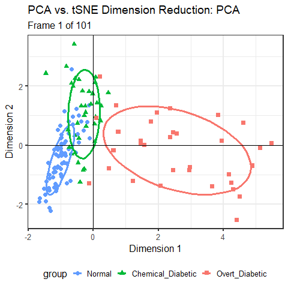

4.1 Flatland and Spaceland
It is high time that I should pass from these brief and discursive notes about Flatland to the central event of this book, my initiation into the mysteries of Space. THAT is my subject; all that has gone before is merely preface — Edwin Abbott, Flatland, p. 57.
There was a cloud in the sky above Flatland one day. But it was a huge, multidimensional cloud of sparkly points that might contain some important message, perhaps like the hidden EUREKA (Figure fig-pollen-eureka), or perhaps forecasting the upcoming harvest, if only Flatlanders could appreciate it.
A leading citizen, A SQUARE, who had traveled once to Spaceland and therefore had an inkling of its majesty beyond the simple world of his life in the plane looked at that cloud and had a brilliant thought, an OMG moment:
“Oh, can I, in my imagination, rotate that cloud and squeeze its juice so that it rains down on Flatland with greatest joy?”
As it happened, our Square friend, although he could never really see in three dimensions, he could now at least think of a world described by height as well as breadth and width, and think of the shadow cast by a cloud as something mutable, changing size and shape depending on its’ orientation over Flatland.
And what a world it was, inhabited by Pyramids, Cubes and wondrous creatures called Polyhedrons with many \(C\)orners, \(F\)aces and \(E\)dges. Not only that, but all those Polyhedra were forced in Spaceland to obey a magic formula: \(C + F - E = 2\).1 How cool was that!
Indeed, there were even exalted Spheres, having so many faces that its surface became as smooth as a baby’s bottom with no need for pointed corners or edges, just as Circles were the smoothest occupants of his world with far too many sides to count. It was his dream of a Sphere passing through Flatland (Figure fig-flatland-spheres) that first awakened him to a third dimension.
He also marveled at Ellipsoids, as smooth as Spheres, but in Spaceland having three natural axes of different extent and capable of being appearing fatter or slimmer when rotated from different views. An Ellipsoid had magical properties: it could appear as so thin in one or more dimensions that it became a simple 2D ellipse, or a 1D line, or even a 0D point (Friendly et al., 2013).
All of these now arose in Square’s richer 3D imagination. And, all of this came from just one more dimension than his life in Flatland.
4.1.1 Multivariate juicers
Up to now, we have also been living in Flatland. We have been trying to understand data in data space of possibly many dimensions, but confined to the 2D plane of a graph window. Scatterplot matrices and parallel coordinate plots provided some relief. The former did so by projecting the data into sets of 2D views in the coordinates of data space; the latter did so by providing multiple axes in a 2D space along which we could trace the paths of individual observations.
This chapter is about seeing data in a different projection, a low-dimensional (usually 2D) space that squeezes out the most juice from multidimensional data for a particular purpose (Figure fig-MV-juicer), where what we want to understand can be more easily seen.
Here, I concentrate on principal components analysis (PCA), whose goal reflects A Square’s desire to see that sparkly cloud of points in \(nD\) space in the plane showing the greatest variation (squeezing the most juice) among all other possible views. This appealed to his sense of geometry, but left him wondering how the variables in that high-D cloud were related to the dimensions he could see in a best-fitting plane.
The idea of a biplot, showing the data points in the plane, together with thick pointed arrows—variable vectors— in one view is the other topic explained in this chapter (sec-biplot). The biplot is the simplest example of a multivariate juicer. The essential idea is to project the cloud of data points in \(n\) dimensions into the 2D space of principal components and simultaneously show how the original variables relate to this space. For exploratory analysis to get an initial, incisive view of a multivariate dataset, a biplot is often my first choice.
Looking ahead
I’m using the term multivariate juicer here to refer the wider class of dimension reduction techniques, used for various purposes in data analysis and visualization. PCA is the simplest example and illustrates the general ideas.
The key point is that these methods are designed to transform the data into a low-dimensional space for a particular goal or purpose. In PCA, the goal is to extract the greatest amount of total variability in the data. In the context of univariate multiple regression, the goal is often to reduce the number of predictors necessary to account for an outcome variable, called feature extraction in the machine learning literature.
When the goal is to best distinguish among groups discriminant analysis finds uncorrelated weighted sums of predictors on which the means of groups are most widely separated in a reduced space of hopefully fewer dimensions.
The methods I cover in this book are all linear methods, but there is also a wide variety of non-linear dimension reduction techniques.
Packages
In this chapter I use the following packages. Load them now:
library(ggplot2)
library(dplyr)
library(tidyr)
library(patchwork)
library(ggbiplot)
library(FactoMineR)
library(factoextra)
library(car)
library(ggpubr)
library(matlib)4.2 Principal components analysis (PCA)
When Francis Galton (1886) first discovered the idea of regression toward the mean and presented his famous diagram (Figure fig-galton-corr), he had little thought that he had provided a window to a higher-dimensional world, beyond what even A Square could imagine. His friend, Karl Pearson (1896) took that idea and developed it into a theory of regression and a measure of correlation that would bear his name, Pearson’s \(r\).
But then Pearson (1901) had a further inspiration, akin to that of A Square. If he also had a cloud of sparkly points in \(2, 3, 4, ..., p\) dimensions, could he find a point (\(0D\)), or line (\(1D\)), or plane (\(2D\)), or even a hyperplane (\(nD\)) that best summarized — squeezed out the most juice—from multivariate data? This was the first truly multivariate problem in the history of statistics (Friendly & Wainer, 2021, p. 186).
The best \(0D\) point was easy— it was simply the centroid, the means of each of the variables in the data, \((\bar{x}_1, \bar{x}_2, ..., \bar{x}_p)\), because that was “closest” to the data in the sense of minimizing the sum of squared differences, \(\Sigma_i\Sigma_j (x_{ij} - \bar{x}_j)^2\). In higher dimensions, his solution was also an application of the method of least squares, but he argued it geometrically and visually as shown in Figure fig-Pearson1901.
For a \(1D\) summary, the line of best fit to the points \(P_1, P_2, \dots P_n\) is the line that goes through the centroid and made the average squared length of the perpendicular segments from those points to a line as small as possible. This was different from the case in linear regression, for fitting \(y\) from \(x\), where the average squared length of the vertical segments, \(\Sigma_i (y_i - \hat{y}_i)^2\) was minimized by least squares.
He went on to prove the visual insights from simple smoothing of Galton (1886) (shown in Figure fig-galton-corr) regarding the regression lines of y ~ x and x ~ y. More importantly, he proved that the cloud of points is captured, for the purpose of finding a best line, plane or hyperplane, by the ellipsoid that encloses it, as seen in his diagram, Figure fig-Pearson1901-2. The major axis of the 2D ellipse is the line of best fit, along which the data points have the smallest average squared distance from the line. The axis at right angles to that—the minor axis— is labeled “line of worst fit” with the largest average squared distance.
Even more importantly— and this is the basis for PCA — he recognized that the two orthogonal axes of the ellipse gave new coordinates for the data which were uncorrelated, whatever the correlation of \(x\) and \(y\).
Physically, the axes of the correlation type-ellipse are the directions of independent and uncorrelated variation. — Pearson (1901), p. 566.
It was but a small step to recognize that for two variables, \(x\) and \(y\):
- The line of best fit, the major axis (PC1) had the greatest variance of points projected onto it.
- The line of worst fit, the minor axis (PC2), had the least variance.
- These could be seen as a rotation of the data space of \((x, y)\) to a new space (PC1, PC2) with uncorrelated variables.
- The total variation of the points in data space, \(\text{Var}(x) + \text{Var}(y)\), being unchanged by rotation, was equally well expressed as the total variation \(\text{Var}(PC1) + \text{Var}(PC2)\) of the scores on what are now called the principal component axes.
It would have appealed to Pearson (and also to A Square) to see these observations demonstrated in a 3D video. Figure fig-pca-animation shows a 3D plot of the variables Sepal.Length, Sepal.Width and Petal.Length in Edgar Anderson’s iris data, with points colored by species and the 95% data ellipsoid. This is rotated smoothly by interpolation until the first two principal axes, PC1 and PC2 are aligned with the horizontal and vertical dimensions. Because this is a rigid rotation of the cloud of points, the total variability is obviously unchanged.

iris data, initially in data space and its’ data ellipsoid, with points colored according to species of the iris flowers. This is rotated smoothly until the first two principal axes are aligned with the horizontal and vertical directions in the final frame.
4.2.1 PCA by springs
Before delving into the mathematics of PCA, it is useful to see how Pearson’s problem, and fitting by least squares generally, could be solved in a physical realization.
From elementary statistics, you may be familiar with a physical demonstration that the mean, \(\bar{x}\), of a sample is the value for which the sum of deviations, \(\Sigma_i (x_i - \bar{x})\) is zero, so the mean can be visualized as the point of balance on a line where those differences \((x_i - \bar{x})\) are placed. Equally well, there is a physical realization of the mean as the point along an axis where weights connected by springs will minimize the sum of squared differences, because springs with a constant stiffness, \(k\), exert forces proportional to \(k (x_i - \bar{x}) ^2\). That’s the reason it is useful as a measure of central tendency: it minimizes the average squared error.
In two dimensions, imagine that we have points, \((x_i, y_i)\) and these are attached by springs of equal stiffness \(k\), to a line anchored at the centroid, \((\bar{x}, \bar{y})\) as shown in Figure fig-pca-springs. If we rotate the line to some initial position and release it, the springs will pull the line clockwise or counterclockwise and the line will bounce around until the forces, proportional to the squares of the lengths of the springs, will eventually balance out at the position (shown by the red fixed line segments at the ends). This is the position that minimizes the the sum of squared lengths of the connecting springs, and also minimizes the kinetic energy in the system.
If you look closely at Figure fig-pca-springs you will see something else: When the line is at its final position of minimum squared length and energy, the positions of the red points on this line are spread out furthest, i.e., have maximum variance. Conversely, when the line is at right angles to its final position (shown by the black line at 90\(^o\)) the projected points have the smallest possible variance.
4.2.2 Mathematics and geometry of PCA
As the ideas of principal components developed, there was a happy marriage of Galton’s geometrical intuition and Pearson’s mathematical analysis. The best men at the wedding were ellipses and higher-dimensional ellipsoids. The bridesmaids were eigenvectors, pointing in as many different directions as space would allow, each sized according to their associated eigenvalues. Attending the wedding were the ghosts of uncles, Leonhard Euler, Jean-Louis Lagrange, Augustin-Louis Cauchy and others who had earlier discovered the mathematical properties of ellipses and quadratic forms in relation to problems in physics.
The key idea in the statistical application was that, for a set of variables \(\mathbf{x}_1, \mathbf{x}_2, \dots, \mathbf{x}_p\), the \(p \times p\) covariance matrix \(\mathbf{S}\) could be expressed exactly as a matrix product involving a matrix \(\mathbf{V}\), whose columns are eigenvectors (\(\mathbf{v}_i\)) and a diagonal matrix \(\mathbf{\Lambda}\), whose diagonal elements (\(\lambda_i\)) are the corresponding eigenvalues.
To explain this, it is helpful to use a bit of matrix math:
\[\begin{aligned} \mathbf{S}_{p \times p} & = \mathbf{V}_{p \times p} \phantom{0000000000} \mathbf{\Lambda}_{p \times p} \phantom{00000000000000} \mathbf{V}_{p \times p}^\mathsf{T} \\ & = \left( \mathbf{v}_1, \, \mathbf{v}_2, \,\dots, \, \mathbf{v}_p \right) \begin{pmatrix} \lambda_1 & & & \\ & \lambda_2 & & \\ & & \ddots & \\ & & & \lambda_p \end{pmatrix} \; \begin{pmatrix} \mathbf{v}_1^\mathsf{T}\\ \mathbf{v}_2^\mathsf{T}\\ \vdots\\ \mathbf{v}_p^\mathsf{T}\\ \end{pmatrix} \\ & = \lambda_1 \mathbf{v}_1 \mathbf{v}_1^\mathsf{T} + \lambda_2 \mathbf{v}_2 \mathbf{v}_2^\mathsf{T} + \cdots + \lambda_p \mathbf{v}_p \mathbf{v}_p^\mathsf{T} \end{aligned} \tag{4.1}\]
In this equation,
The last line follows because \(\mathbf{\Lambda}\) is a diagonal matrix, so \(\mathbf{S}\) is expressed as a sum of outer products of each \(\mathbf{v}_i\) with itself, times the eigenvalue \(\lambda_i\).
The columns of \(\mathbf{V}\) are the eigenvectors of \(\mathbf{S}\). They are orthogonal and of unit length, so \(\mathbf{V}^\mathsf{T} \mathbf{V} = \mathbf{I}\) and thus they represent orthogonal (uncorrelated) directions in data space.
The columns \(\mathbf{v}_i\) are the weights applied to the variables to produce the scores on the principal components. For example, the first principal component is the weighted sum:
\[ \text{PC}_1 = v_{11} \mathbf{x}_1 + v_{12} \mathbf{x}_2 + \cdots + v_{1p} \mathbf{x}_p \:\: . \]
The matrix of all scores on the principal components can be calculated by multiplying the data matrix \(\mathbf{X}\) by the eigenvectors, \(\mathbf{PC} = \mathbf{X} \mathbf{V}\).
The eigenvalues, \(\lambda_1, \lambda_2, \dots, \lambda_p\) are the variances of the the components, because \(\mathbf{v}_i^\mathsf{T} \;\mathbf{S} \; \mathbf{v}_i = \lambda_i\).
It is usually the case that the variables \(\mathbf{x}_1, \mathbf{x}_2, \dots, \mathbf{x}_p\) are linearly independent, which means that none of these is an exact linear combination of the others. In this case, all eigenvalues \(\lambda_i\) are positive and the covariance matrix \(\mathbf{S}\) is said to have rank \(p\). (Rank is the number of non-zero eigenvalues.)
Here is a key fact: If, as usual, the eigenvalues are arranged in order, so that \(\lambda_1 > \lambda_2 > \dots > \lambda_p\), then the first \(d\) components give a \(d\)-dimensional approximation to \(\mathbf{S}\), which accounts for \(\Sigma_i^d \lambda_i\) of the \(\Sigma_i^p \lambda_i\) total variance, usually interpreted as the proportion, \((\Sigma_i^d \lambda_i) / (\Sigma_i^p \lambda_i)\).
For the case of two variables, \(\mathbf{x}_1\) and \(\mathbf{x}_2\) Figure fig-pca-rotation shows the transformation from data space to component space. The eigenvectors, \(\mathbf{v}_1, \mathbf{v}_2\) are the major and minor axes of the data ellipse, whose lengths are the square roots \(\sqrt{\lambda_1}, \sqrt{\lambda_2}\) of the eigenvalues.

Example: Workers’ experience and income
For a small example, consider the relation between years of experience and income in a small (contrived) sample (\(n = 10\)) of workers in a factory. The dataset matlib::workers contains these and other variables. In a wider context, we might want to fit a regression model to predict Income, but here we focus on a PCA of just these two variables.
data(workers, package = "matlib")
head(workers)
#> Income Experience Skill Gender
#> Abby 20 0 2 Female
#> Betty 35 5 5 Female
#> Charles 40 5 8 Male
#> Doreen 30 10 6 Female
#> Ethan 50 10 10 Male
#> Francie 50 15 7 FemaleLet’s start with a simple scatterplot of Income vs. Experience, with points labeled by Name (and colored by Gender). There’s a fairly strong correlation (\(r\) = 0.853). How does a PCA capture this?
vars <- c("Experience", "Income")
plot(workers[, vars],
pch = 16, cex = 1.5,
cex.lab = 1.5)
text(workers[, vars],
labels = rownames(workers),
col = ifelse(workers$Gender == "Female", "red", "blue"),
pos = 3, xpd = TRUE)
workers data.
To carry out a PCA of these variables, first calculate the vector of means (\(\bar{\mathbf{x}}\)) and covariance matrix \(\mathbf{S}\).
mu <- colMeans(workers[, vars]) |> print()
#> Experience Income
#> 15.5 46.5
S <- cov(workers[, vars]) |> print()
#> Experience Income
#> Experience 136 152
#> Income 152 234The eigenvalues and eigenvectors of S are calculated by eigen(). This returns a list with components values for the \(\lambda_i\) and vectors for \(\mathbf{V}\).
S.eig <- eigen(S)
Lambda <- S.eig$values |> print()
#> [1] 344.3 25.1
V <- S.eig$vectors |> print()
#> [,1] [,2]
#> [1,] 0.589 -0.808
#> [2,] 0.808 0.589From this, you can verify the points above regarding the relations between variances of the variables and the eigenvalues:
#total variances of the variables = sum of eigenvalues
sum(diag(S))
#> [1] 369
sum(Lambda)
#> [1] 369
# percent of variance of each PC
100 * Lambda / sum(Lambda)
#> [1] 93.2 6.8Using these, you can express the eigenvalue decomposition of \(\mathbf{S}\) in Equation eq-S-eigen with latexMatrix() and Eqn from the matlib package (Friendly et al., 2024) as:
options(digits = 4)
rownames(S) <- colnames(S) <- c("\\small \\text{Exp}",
"\\small \\text{Inc}")
spacer <- "\\phantom{00000000000000}"
Eqn("\\mathbf{S} & = \\mathbf{V}", spacer,
"\\mathbf{\\Lambda}", spacer,
"\\mathbf{V}^\\top", Eqn_newline(),
latexMatrix(S), "& =",
latexMatrix(V), " ", diag(Lambda), " ", latexMatrix(V, transpose=TRUE),
align = TRUE)\[\begin{aligned} \mathbf{S} & = \mathbf{V} \phantom{00000000000000} \mathbf{\Lambda} \phantom{00000000000000} \mathbf{V}^\top \\ \begin{matrix} & \begin{matrix} \phantom{i} Exp & Inc \end{matrix} \\ \begin{matrix} Exp\\ Inc\\ \end{matrix} & \begin{pmatrix} 136 & 152 \\ 152 & 234 \\ \end{pmatrix} \\ \end{matrix} & =\begin{pmatrix} 0.589 & -0.808 \\ 0.808 & 0.589 \\ \end{pmatrix} \begin{pmatrix} 344.3 & 0.0 \\ 0.0 & 25.1 \\ \end{pmatrix} \begin{pmatrix} 0.589 & -0.808 \\ 0.808 & 0.589 \\ \end{pmatrix}^\top \end{aligned}\]
The “scores” on the principal components can be calculated (point (5) above) as \(\mathbf{PC} = \mathbf{X} \mathbf{V}\):
PC <- as.matrix(workers[, vars]) %*% V
colnames(PC) <- paste0("PC", 1:2)
head(PC)
#> PC1 PC2
#> Abby 16.2 11.78
#> Betty 31.2 16.57
#> Charles 35.3 19.52
#> Doreen 30.1 9.59
#> Ethan 46.3 21.37
#> Francie 49.2 17.32Then, you can visualize the geometry of PCA as in Figure fig-pca-rotation (left) by plotting the data ellipse for the points, along with the PCA axes (heplots::ellipse.axes()). Figure fig-workers-pca also shows the bounding box of the data ellipse, which are parallel to the PC axes and scaled to have the same “radius” as the data ellipse.
# calculate conjugate axes for PCA factorization
pca.fac <- function(x) {
xx <- svd(x)
ret <- t(xx$v) * sqrt(pmax( xx$d,0))
ret
}
dataEllipse(Income ~ Experience, data=workers,
pch = 16, cex = 1.5,
center.pch = "+", center.cex = 2,
cex.lab = 1.5,
levels = 0.68,
grid = FALSE,
xlim = c(-10, 40),
ylim = c(10, 80),
asp = 1)
abline(h = mu[2], v = mu[1],
lty = 2, col = "grey")
# axes of the ellipse = PC1, PC2
radius <- sqrt(2 * qf(0.68, 2, nrow(workers)-1 ))
heplots::ellipse.axes(S, mu,
radius = radius,
labels = TRUE,
col = "red", lwd = 2,
cex = 1.8)
# bounding box of the ellipse
lines(spida2::ellplus(mu, S, radius = radius,
box = TRUE, fac = pca.fac),
col = "darkgreen",
lwd = 2, lty="longdash")
workers data, showing the data ellipse, the eigenvectors of \(\mathbf{S}\), whose half-lengths are the square roots \(\sqrt{\lambda_i}\) of the eigenvalues, and the bounding box of the ellipse.
Finally, to preview the methods of the next section, the results calculated “by hand” above can be obtained using prcomp(). The values labeled "Standard deviations" are the square roots \(\sqrt{\lambda}_i\) of the two eigenvalues. The eigenvectors are labeled "Rotation" because \(\mathbf{V}\) is the matrix that rotates the data matrix to produce the component scores.
workers.pca <- prcomp(workers[, vars]) |> print()
#> Standard deviations (1, .., p=2):
#> [1] 18.56 5.01
#>
#> Rotation (n x k) = (2 x 2):
#> PC1 PC2
#> Experience 0.589 0.808
#> Income 0.808 -0.5894.2.3 Finding principal components
In R, PCA is most easily carried out using stats::prcomp() or stats::princomp() or similar functions in other packages such as FactomineR::PCA(). The FactoMineR package (Husson et al., 2017, 2024) has extensive capabilities for exploratory analysis of multivariate data (PCA, correspondence analysis, cluster analysis).
A particular strength of FactoMineR for PCA is that it allows the inclusion of supplementary variables (which can be categorical or quantitative) and supplementary points for individuals. These are not used in the analysis, but are projected into the plots to facilitate interpretation. For example, in the analysis of the crime data described below, it would be useful to have measures of other characteristics of the U.S. states, such as poverty and average level of education (sec-supp-vars).
Unfortunately, although all of these functions perform similar calculations, the options for analysis and the details of the result they return differ.
The important options for analysis include:
- whether or not the data variables are centered, to a mean of \(\bar{x}_j =0\)
- whether or not the data variables are scaled, to a variance of \(\text{Var}(x_j) =1\).
It nearly always makes sense to center the variables. The choice of scaling determines whether the correlation matrix is analyzed, so that each variable contributes equally to the total variance that is to be accounted for versus analysis of the covariance matrix, where each variable contributes its own variance to the total. Analysis of the covariance matrix makes little sense when the variables are measured on different scales2, unless you want to interpret total variance on the scales of the different variables.
You don’t need to scale your data in advance, but be aware of the options: prcomp() has default options center = TRUE, scale. = FALSE3 so in most cases you should specify scale. = TRUE. I mostly use this. The older princomp() has only the option cor = FALSE which centers the data and uses the covariance matrix, so in most cases the default is OK.
To illustrate, the analysis of the workers data presented above used scale. = FALSE by default, so the eigenvalues reflected the variances of Experience and Income. The analogous result, using standardized variables (\(z\)-scores) can be computed in any of the forms shown below, using either scale. = FALSE or standardizing first using scale():
prcomp(workers[, vars], scale. = TRUE)
#> Standard deviations (1, .., p=2):
#> [1] 1.361 0.383
#>
#> Rotation (n x k) = (2 x 2):
#> PC1 PC2
#> Experience 0.707 0.707
#> Income 0.707 -0.707
# same as (output suppressed):
workers[, vars] |> prcomp(scale. = TRUE) |> invisible()
workers[, vars] |> scale() |> prcomp() |> invisible()In this form, each of Experience and Income have variance = 1, and the "Standard deviations" reported are the square roots (\(\sqrt{\lambda}_i\)) of the eigenvalues \(\lambda_i\) of the correlation matrix \(\mathbf{R}\). The eigenvalues of a correlation matrix always sum to \(p\), the number of variables. This fact prompted the rough rule of thumb to extract principal componends whose eigenvalues exceed 1.0, which is their average value, \(\bar{\lambda} = (\Sigma^p \lambda_i) / p = p / p\).
prcomp(workers[, vars], scale. = TRUE)$sdev
#> [1] 1.361 0.383
# eiven values of correlation matrix
R <- cor(workers[, vars])
R.eig <- eigen(R)
Lambda <- R.eig$values |> print()
#> [1] 1.853 0.147
sum(Lambda)
#> [1] 2Example: Crime data
The dataset crime, analysed in sec-corrgram, showed all positive correlations among the rates of various crimes in the corrgram, Figure fig-crime-corrplot. What can we see from a PCA? Is it possible that a few dimensions can account for most of the juice in this data?
In this example, you can easily find the PCA solution using prcomp() in a single line in base-R. You need to specify the numeric variables to analyze by their columns in the data frame. The most important option here is scale. = TRUE.
data(crime, package = "ggbiplot")
crime.pca <- prcomp(crime[, 2:8], scale. = TRUE)The tidy equivalent is more verbose, but also more expressive about what is being done. It selects the variables to analyze by a function, is.numeric() applied to each of the columns and feeds the result to prcomp().
crime.pca <-
crime |>
dplyr::select(where(is.numeric)) |>
prcomp(scale. = TRUE)As is typical with models in R, the result, crime.pca of prcomp() is an object of class "prcomp", a list of components, and there are a variety of methods for "prcomp" objects. Among the simplest is summary(), which gives the contributions of each component to the total variance in the dataset.
summary(crime.pca) |> print(digits=2)
#> Importance of components:
#> PC1 PC2 PC3 PC4 PC5 PC6 PC7
#> Standard deviation 2.03 1.11 0.85 0.563 0.508 0.471 0.352
#> Proportion of Variance 0.59 0.18 0.10 0.045 0.037 0.032 0.018
#> Cumulative Proportion 0.59 0.76 0.87 0.914 0.951 0.982 1.000The object, crime.pca returned by prcomp() is a list of the following the following elements:
names(crime.pca)
#> [1] "sdev" "rotation" "center" "scale" "x"Of these, for \(n\) observations and \(p\) variables,
sdevis the length \(p\) vector of the standard deviations of the principal components (i.e., the square roots \(\sqrt{\lambda_i}\) of the eigenvalues of the covariance/correlation matrix). When the variables are standardized, the sum of squares of the eigenvalues is equal to \(p\).rotationis the \(p \times p\) matrix of weights or loadings of the variables on the components; the columns are the eigenvectors of the covariance or correlation matrix of the data;xis the \(n \times p\) matrix of scores for the observations on the components, the result of multiplying (rotating) the data matrix by the loadings. These are uncorrelated, socov(x)is a \(p \times p\) diagonal matrix whose diagonal elements are the eigenvalues \(\lambda_i\) =sdev^2.centergives the means of the variables when the optioncenter. = TRUE(the default)
4.2.4 Visualizing variance proportions: screeplots
For a high-D dataset, such as the crime data in seven dimensions, a natural question is how much of the variation in the data can be captured in 1D, 2D, 3D, … summaries and views. This is answered by considering the proportions of variance accounted by each of the dimensions, or their cumulative values. The components returned by various PCA methods have (confusingly) different names, so broom::tidy() provides methods to unify extraction of these values.
(crime.eig <- crime.pca |>
broom::tidy(matrix = "eigenvalues"))
#> # A tibble: 7 × 4
#> PC std.dev percent cumulative
#> <dbl> <dbl> <dbl> <dbl>
#> 1 1 2.03 0.588 0.588
#> 2 2 1.11 0.177 0.765
#> 3 3 0.852 0.104 0.868
#> 4 4 0.563 0.0452 0.914
#> 5 5 0.508 0.0368 0.951
#> 6 6 0.471 0.0317 0.982
#> 7 7 0.352 0.0177 1Then, a simple visualization is a plot of the proportion of variance for each component (or cumulative proportion) against the component number, usually called a screeplot. The idea, introduced by Cattell (1966), is that after the largest, dominant components, the remainder should resemble the rubble, or scree formed by rocks falling from a cliff.
From this plot, imagine drawing a straight line through the plotted eigenvalues, starting with the largest one. The typical rough guidance is that the last point to fall on this line represents the last component to extract, the idea being that beyond this, the amount of additional variance explained is non-meaningful. Another rule of thumb is to choose the number of components to extract a desired proportion of total variance, usually in the range of 80 - 90%.
stats::plot(crime.pca) would give a bar plot of the variances of the components, however ggbiplot::ggscreeplot() gives nicer and more flexible displays as shown in Figure fig-crime-ggscreeplot.
p1 <- ggscreeplot(crime.pca) +
stat_smooth(data = crime.eig |> filter(PC>=4),
aes(x=PC, y=percent), method = "lm",
se = FALSE,
fullrange = TRUE) +
theme_bw(base_size = 14)
p2 <- ggscreeplot(crime.pca, type = "cev") +
geom_hline(yintercept = c(0.8, 0.9), color = "blue") +
theme_bw(base_size = 14)
p1 + p2
From this we might conclude that four components are necessary to satisfy the scree criterion or to account for 90% of the total variation in these crime statistics. However two components, giving 76.5%, might be enough juice to tell a reasonable story.
4.2.5 Visualizing PCA scores and variable vectors
To see and attempt to understand PCA results, it is useful to plot both the scores for the observations on a few of the largest components and also the loadings or variable vectors that give the weights for the variables in determining the principal components.
In sec-biplot I discuss the biplot technique that plots both in a single display. However, I do this directly here, using tidy processing to explain what is going on in PCA and in these graphical displays.
Scores
The (uncorrelated) principal component scores can be extracted as crime.pca$x or using purrr::pluck("x"). As noted above, these are uncorrelated and have variances equal to the eigenvalues of the correlation matrix.
scores <- crime.pca |> purrr::pluck("x")
cov(scores) |> zapsmall()
#> PC1 PC2 PC3 PC4 PC5 PC6 PC7
#> PC1 4.11 0.00 0.00 0.00 0.00 0.00 0.00
#> PC2 0.00 1.24 0.00 0.00 0.00 0.00 0.00
#> PC3 0.00 0.00 0.73 0.00 0.00 0.00 0.00
#> PC4 0.00 0.00 0.00 0.32 0.00 0.00 0.00
#> PC5 0.00 0.00 0.00 0.00 0.26 0.00 0.00
#> PC6 0.00 0.00 0.00 0.00 0.00 0.22 0.00
#> PC7 0.00 0.00 0.00 0.00 0.00 0.00 0.12For plotting, it is more convenient to use broom::augment() which extracts the scores (named .fittedPC*) and appends these to the variables in the dataset.
crime.pca |>
broom::augment(crime) |> head()
#> # A tibble: 6 × 18
#> .rownames state murder rape robbery assault burglary larceny
#> <chr> <chr> <dbl> <dbl> <dbl> <dbl> <dbl> <dbl>
#> 1 1 Alabama 14.2 25.2 96.8 278. 1136. 1882.
#> 2 2 Alaska 10.8 51.6 96.8 284 1332. 3370.
#> 3 3 Arizona 9.5 34.2 138. 312. 2346. 4467.
#> 4 4 Arkansas 8.8 27.6 83.2 203. 973. 1862.
#> 5 5 California 11.5 49.4 287 358 2139. 3500.
#> 6 6 Colorado 6.3 42 171. 293. 1935. 3903.
#> # ℹ 10 more variables: auto <dbl>, st <chr>, region <fct>,
#> # .fittedPC1 <dbl>, .fittedPC2 <dbl>, .fittedPC3 <dbl>,
#> # .fittedPC4 <dbl>, .fittedPC5 <dbl>, .fittedPC6 <dbl>,
#> # .fittedPC7 <dbl>Then, we can use ggplot() to plot any pair of components. To aid interpretation, I label the points by their state abbreviation and color them by region of the U.S.. A geometric interpretation of the plot requires an aspect ratio of 1.0 (via coord_fixed()) so that a unit distance on the horizontal axis is the same length as a unit distance on the vertical. To demonstrate that the components are uncorrelated, I also added their data ellipse.
crime.pca |>
broom::augment(crime) |> # add original dataset back in
ggplot(aes(.fittedPC1, .fittedPC2, color = region)) +
geom_hline(yintercept = 0) +
geom_vline(xintercept = 0) +
geom_point(size = 1.5) +
geom_text(aes(label = st), nudge_x = 0.2) +
stat_ellipse(color = "grey") +
coord_fixed() +
labs(x = "PC Dimension 1", y = "PC Dimnension 2") +
theme_minimal(base_size = 14) +
theme(legend.position = "top") 
crime data. States are colored by region.
To interpret such plots, it is useful consider the observations that are a high and low on each of the axes as well as other information, such as region here, and ask how these differ on the crime statistics. The first component, PC1, contrasts Nevada and California with North Dakota, South Dakota and West Virginia. The second component has most of the southern states on the low end and Massachusetts, Rhode Island and Hawaii on the high end. However, interpretation is easier when we also consider how the various crimes contribute to these dimensions.
When, as here, there are more than two components that seem important in the scree plot, we could obviously go further and plot other pairs.
Variable vectors
You can extract the variable loadings using either crime.pca$rotation or purrr::pluck("rotation"), similar to what I did with the scores.
crime.pca |> purrr::pluck("rotation")
#> PC1 PC2 PC3 PC4 PC5 PC6 PC7
#> murder -0.300 -0.6292 -0.1782 0.2321 0.5381 0.2591 0.2676
#> rape -0.432 -0.1694 0.2442 -0.0622 0.1885 -0.7733 -0.2965
#> robbery -0.397 0.0422 -0.4959 0.5580 -0.5200 -0.1144 -0.0039
#> assault -0.397 -0.3435 0.0695 -0.6298 -0.5067 0.1724 0.1917
#> burglary -0.440 0.2033 0.2099 0.0576 0.1010 0.5360 -0.6481
#> larceny -0.357 0.4023 0.5392 0.2349 0.0301 0.0394 0.6017
#> auto -0.295 0.5024 -0.5684 -0.4192 0.3698 -0.0573 0.1470But note something important in this output: All of the weights for the first component are negative. In PCA, the directions of the eigenvectors are completely arbitrary, in the sense that the vector \(-\mathbf{v}_i\) gives the same linear combination as \(\mathbf{v}_i\), but with its’ sign reversed. For interpretation, it is useful (and usually recommended) to reflect the loadings to a positive orientation by multiplying them by -1. In general, you are free to reflect any of the components for ease of interpretation, and not necessarily if all the signs are negative.
To reflect the PCA loadings (multiplying PC1 and PC2 by -1) and get them into a convenient format for plotting with ggplot(), it is necessary to do a bit of processing, including making the row.names() into an explicit variable for the purpose of labeling.
rownames in R
R software evolved over many years, particularly in conventions for labeling cases in printed output and graphics. In base-R, the convention was that the row.names() of a matrix or data.frame served as observation labels in all printed output and plots, with a default to use numbers 1:n if there were no rownames. In ggplot2 and the tidyverse framework, the decision was made that observation labels had to be an explicit variable in a “tidy” dataset, so it could be used as a variable in constructs like geom_text(aes(label = label)) as in this example. This change often requires extra steps in software that uses the rownames convention.
vectors <- crime.pca |>
purrr::pluck("rotation") |>
as.data.frame() |>
mutate(PC1 = -1 * PC1, PC2 = -1 * PC2) |> # reflect axes
tibble::rownames_to_column(var = "label")
vectors[, 1:3]
#> label PC1 PC2
#> 1 murder 0.300 0.6292
#> 2 rape 0.432 0.1694
#> 3 robbery 0.397 -0.0422
#> 4 assault 0.397 0.3435
#> 5 burglary 0.440 -0.2033
#> 6 larceny 0.357 -0.4023
#> 7 auto 0.295 -0.5024Then, I plot these using geom_segment(), taking some care to use arrows from the origin with a nice shape and add geom_text() labels for the variables positioned slightly to the right. Again, coord_fixed() ensures equal scales for the axes, which is important because we want to interpret the angles between the variable vectors and the PCA coordinate axes.
arrow_style <- arrow(
angle = 20, ends = "first", type = "closed",
length = grid::unit(8, "pt")
)
vectors |>
ggplot(aes(PC1, PC2)) +
geom_hline(yintercept = 0) +
geom_vline(xintercept = 0) +
geom_segment(xend = 0, yend = 0,
linewidth = 1,
arrow = arrow_style,
color = "brown") +
geom_text(aes(label = label),
size = 5,
hjust = "outward",
nudge_x = 0.05,
color = "brown") +
ggforce::geom_circle(aes(x0 = 0, y0 = 0, r = 0.5), color = gray(.50)) +
xlim(-0.5, 0.9) +
ylim(-0.8, 0.8) +
coord_fixed() + # fix aspect ratio to 1:1
theme_minimal(base_size = 14)
crime data. These are interpreted as the contributions of the variables to the components.
The variable vectors (arrows) shown in Figure fig-crime-vectors have the following interpretations:
The lengths of the variable vectors, \(\lVert\mathbf{v}_i\rVert = \sqrt{\Sigma_{j} \; v_{ij}^2}\) give the relative proportion of variance of each variable accounted for in a two-dimensional display.
Each vector points in the direction in component space with which that variable is most highly correlated: the value, \(v_{ij}\), of the vector for variable \(\mathbf{x}_i\) on component \(j\) reflects the correlation of that variable with the \(j\)th principal component. Thus,
- A Variable that is perfectly correlated with a component is parallel to it.
- A variable this is uncorrelated with an component is perpendicular to it.
- The angle between vectors shows the strength and direction of the correlation between those variables: the cosine of the angle \(\theta\) between two variable vectors, \(\mathbf{v}_i\) and \(\mathbf{v}_j\), which is \(\cos(\theta) = \mathbf{v}_i^\prime \; \mathbf{v}_j \;/ \; \| \mathbf{v}_i \| \cdot \| \mathbf{v}_j \|\) gives the approximation of the correlation \(r_{ij}\) between \(\mathbf{x}_i\) and \(\mathbf{x}_j\) that is shown in this space. This means that: * two variable vectors that point in the same direction are highly correlated; \(r = 1\) if they are completely aligned. * Variable vectors at right angles are approximately uncorrelated, while those pointing in opposite directions are negatively correlated; \(r = -1\) if they are at 180\(^o\).
To illustrate point (1), the following indicates that almost 70% of the variance of murder is represented in the the 2D plot shown in Figure fig-crime-scores-plot12, but only 40% of the variance of robbery is captured. For point (2), the correlation of murder with the dimensions is 0.3 for PC1 and 0.63 for PC2. For point (3), the angle between murder and burglary looks to be about 90\(^o\), but the actual correlation is 0.39.
vectors |> select(label, PC1, PC2) |>
mutate(length = sqrt(PC1^2 + PC2^2))
#> label PC1 PC2 length
#> 1 murder 0.300 0.6292 0.697
#> 2 rape 0.432 0.1694 0.464
#> 3 robbery 0.397 -0.0422 0.399
#> 4 assault 0.397 0.3435 0.525
#> 5 burglary 0.440 -0.2033 0.485
#> 6 larceny 0.357 -0.4023 0.538
#> 7 auto 0.295 -0.5024 0.5834.3 Biplots
The biplot is a visual multivariate juicer. It is the simple and powerful idea that came from the recognition that you can overlay a plot of observation scores in a principal components analysis with the information of the variable loadings (weights) to give a simultaneous display that is easy to interpret. In this sense, a biplot is generalization of a scatterplot, projecting from data space to PCA space, where the observations are shown by points, as in the plots of component scores in Figure fig-crime-scores-plot12, but with the variables also shown by vectors (or scaled linear axes aligned with those vectors).
The idea of the biplot was introduced by Ruben Gabriel (1971, 1981) and later expanded in scope by Gower & Hand (1996). The book by Greenacre (2010) gives a practical overview of the many variety of biplots. Gower et al. (2011) Understanding biplots provides a full treatment of many topics, including how to calibrate biplot axes, 3D plots, and so forth.
Biplot methodolgy is far more general than I cover here. Categorical variables can be incorporated in PCA using points that represent the levels of discrete categories. Two-way frequency tables of categorical variables can be analysed using correspondence analysis, which is similar to PCA, but designed to account for the maximum amount of the \(\chi^2\) statistic for association; multiple correspondence analysis extends this to method to multi-way tables (Friendly & Meyer, 2016; Greenacre, 1984).
4.3.1 Constructing a biplot
The biplot is constructed by using the singular value decomposition (SVD) to obtain a low-rank approximation to the data matrix \(\mathbf{X}_{n \times p}\) (centered, and optionally scaled to unit variances) whose \(n\) rows are the observations and whose \(p\) columns are the variables.
Using the SVD, the matrix \(\mathbf{X}\), of rank \(r \le p\) can be expressed exactly as: \[ \mathbf{X} = \mathbf{U} \mathbf{\Lambda} \mathbf{V}' = \sum_i^r \lambda_i \mathbf{u}_i \mathbf{v}_i' \; , \tag{4.2}\]
where
- \(\mathbf{U}\) is an \(n \times r\) orthonormal matrix of uncorrelated observation scores; these are also the eigenvectors of \(\mathbf{X} \mathbf{X}'\),
- \(\mathbf{\Lambda}\) is an \(r \times r\) diagonal matrix of singular values, \(\lambda_1 \ge \lambda_2 \ge \cdots \lambda_r\), which are also the square roots of the eigenvalues of \(\mathbf{X} \mathbf{X}'\).
- \(\mathbf{V}\) is an \(r \times p\) orthonormal matrix of variable weights and also the eigenvectors of \(\mathbf{X}' \mathbf{X}\).
Then, a rank 2 (or 3) PCA approximation \(\widehat{\mathbf{X}}\) to the data matrix used in the biplot can be obtained from the first 2 (or 3) singular values \(\lambda_i\) and the corresponding \(\mathbf{u}_i, \mathbf{v}_i\) as:
\[ \mathbf{X} \approx \widehat{\mathbf{X}} = \lambda_1 \mathbf{u}_1 \mathbf{v}_1' + \lambda_2 \mathbf{u}_2 \mathbf{v}_2' \; . \]
The variance of \(\mathbf{X}\) accounted for by each term is \(\lambda_i^2\).
A biplot is then obtained by overlaying two scatterplots that share a common set of axes and have a between-set scalar product interpretation. Typically, the observations (rows of \(\mathbf{X}\)) are represented as points and the variables (columns of \(\mathbf{X}\)) are represented as vectors from the origin.
The scale factor, \(\alpha\) allows the variances of the components to be apportioned between the row points and column vectors, with different interpretations, by representing the approximation \(\widehat{\mathbf{X}}\) as the product of two matrices,
\[ \widehat{\mathbf{X}} = (\mathbf{U} \mathbf{\Lambda}^\alpha) (\mathbf{\Lambda}^{1-\alpha} \mathbf{V}') = \mathbf{A} \mathbf{B}' \] This notation uses a little math trick involving a power, \(0 \le \alpha \le 1\): When \(\alpha = 1\), \(\mathbf{\Lambda}^\alpha = \mathbf{\Lambda}^1 =\mathbf{\Lambda}\), and \(\mathbf{\Lambda}^{1-\alpha} = \mathbf{\Lambda}^0 =\mathbf{I}\). \(\alpha = 1/2\) gives the diagonal matrix \(\mathbf{\Lambda}^{1/2}\) whose elements are the square roots of the singular values.
The choice \(\alpha = 1\) assigns the singular values totally to the left factor; then, the angle between two variable vectors, reflecting the inner product \(\mathbf{x}_j^\mathsf{T}, \mathbf{x}_{j'}\) approximates their correlation or covariance, and the distance between the points approximates their Mahalanobis distances. \(\alpha = 0\) gives a distance interpretation to the column display. \(\alpha = 1/2\) gives a symmetrically scaled biplot. *TODO**: Explain this better.
When the singular values are assigned totally to the left or to the right factor, the resultant coordinates are called principal coordinates and the sum of squared coordinates on each dimension equal the corresponding singular value. The other matrix, to which no part of the singular values is assigned, contains the so-called standard coordinates and have sum of squared values equal to 1.0.
4.3.2 Biplots in R
There are a large number of R packages providing biplots. The most basic, stats::biplot(), provides methods for "prcomp" and "princomp" objects. Among other packages, factoextra (Kassambara & Mundt, 2020), an extension of FactoMineR (Husson et al., 2024), is perhaps the most comprehensive and provides ggplot2 graphics. In addition to biplot methods for quantitative data using PCA (fviz_pca()), it offers biplots for categorical data using correspondence analysis (fviz_ca()) and multiple correspondence analysis (fviz_mca()); factor analysis with mixed quantitative and categorical variables (fviz_famd()) and cluster analysis (fviz_cluster()). The adegraphics package (Dray et al., 2023) produces lovely biplots using lattice graphics, but with its own analytic framework.
Here, I use the ggbiplot [R-ggbiplot] package, which aims to provide a simple interface to biplots within the ggplot2 framework. I also use some convenient utility functions from factoextra.
4.3.3 Example: Crime data
A basic biplot of the crime data, using standardized principal components and labeling the observation by their state abbreviation is shown in Figure fig-crime-biplot1. The correlation circle reflects the data ellipse of the standardized components. This reminds us that these components are uncorrelated and have equal variance in the display.
crime.pca <- reflect(crime.pca) # reflect the axes
ggbiplot(crime.pca,
obs.scale = 1, var.scale = 1,
labels = crime$st ,
circle = TRUE,
varname.size = 4,
varname.color = "brown") +
theme_minimal(base_size = 14) 
In this dataset the states are grouped by region and we saw some differences among regions in the plot (Figure fig-crime-scores-plot12) of component scores. ggbiplot() provides options to include a groups = variable, used to color the observation points and also to draw their data ellipses, facilitating interpretation.
ggbiplot(crime.pca,
obs.scale = 1, var.scale = 1,
groups = crime$region,
labels = crime$st,
labels.size = 4,
var.factor = 1.4,
ellipse = TRUE,
ellipse.prob = 0.5, ellipse.alpha = 0.1,
circle = TRUE,
varname.size = 4,
varname.color = "black",
clip = "off") +
labs(fill = "Region", color = "Region") +
theme_minimal(base_size = 14) +
theme(legend.direction = 'horizontal', legend.position = 'top')
This plot provides what is necessary to interpret the nature of the components and also the variation of the states in relation to these. In this, the data ellipses for the regions provide a visual summary that aids interpretation.
From the variable vectors, it seems that PC1, having all positive and nearly equal loadings, reflects a total or overall index of crimes. Nevada, California, New York and Florida are highest on this, while North Dakota, South Dakota and West Virginia are lowest.
The second component, PC2, shows a contrast between crimes against persons (murder, assault, rape) at the top and property crimes (auto theft, larceny) at the bottom. Nearly all the Southern states are high on personal crimes; states in the North East are generally higher on property crimes.
Western states tend to be somewhat higher on overall crime rate, while North Central are lower on average. In these states there is not much variation in the relative proportions of personal vs. property crimes.
Moreover, in this biplot you can interpret the the value for a particular state on a given crime by considering its projection on the variable vector, where the origin corresponds to the mean, positions along the vector have greater than average values on that crime, and the opposite direction have lower than average values. For example, Massachusetts has the highest value on auto theft, but a value less than the mean. Louisiana and South Carolina on the other hand are highest in the rate of murder and slightly less than average on auto theft.
These 2D plots account for only 76.5% of the total variance of crimes, so it is useful to also examine the third principal component, which accounts for an additional 10.4%. The choices = option controls which dimensions are plotted.
ggbiplot(crime.pca,
choices = c(1,3),
obs.scale = 1, var.scale = 1,
groups = crime$region,
labels = crime$st,
labels.size = 4,
var.factor = 2,
ellipse = TRUE,
ellipse.prob = 0.5, ellipse.alpha = 0.1,
circle = TRUE,
varname.size = 4,
varname.color = "black",
clip = "off") +
labs(fill = "Region", color = "Region") +
theme_minimal(base_size = 14) +
theme(legend.direction = 'horizontal', legend.position = 'top')
Dimension 3 in Figure fig-crime-biplot3 is more subtle. One interpretation is a contrast between larceny, which is a larceny (simple theft) and robbery, which involves stealing something from a person and is considered a more serious crime with an element of possible violence. In this plot, murder has a relatively short variable vector, so does not contribute very much to differences among the states.
4.3.4 Biplot contributions and quality
To better understand how much each variable contributes to the biplot dimensions, it is helpful to see information about the variance of variables along each dimension. Graphically, this is nothing more than a measure of the lengths of projections of the variables on each of the dimensions. factoextra::get_pca_var() calculates a number of tables from a "prcomp" or similar object.
var_info <- factoextra::get_pca_var(crime.pca)
names(var_info)
#> [1] "coord" "cor" "cos2" "contrib"The component cor gives correlations of the variables with the dimensions and contrib gives their variance contributions as percents, where each row and column sums to 100.
contrib <- var_info$contrib
cbind(contrib, Total = rowSums(contrib)) |>
rbind(Total = c(colSums(contrib), NA)) |>
round(digits=2)
#> Dim.1 Dim.2 Dim.3 Dim.4 Dim.5 Dim.6 Dim.7 Total
#> murder 9.02 39.59 3.18 5.39 28.96 6.71 7.16 100
#> rape 18.64 2.87 5.96 0.39 3.55 59.79 8.79 100
#> robbery 15.75 0.18 24.59 31.14 27.04 1.31 0.00 100
#> assault 15.73 11.80 0.48 39.67 25.67 2.97 3.68 100
#> burglary 19.37 4.13 4.41 0.33 1.02 28.73 42.01 100
#> larceny 12.77 16.19 29.08 5.52 0.09 0.16 36.20 100
#> auto 8.71 25.24 32.31 17.58 13.67 0.33 2.16 100
#> Total 100.00 100.00 100.00 100.00 100.00 100.00 100.00 NAThese contributions can be visualized as sorted barcharts for a given axis using factoextra::fviz_contrib(). The dashed horizontal lines are at the average value for each dimension.
p1 <- fviz_contrib(crime.pca, choice = "var", axes = 1,
fill = "lightgreen", color = "black")
p2 <- fviz_contrib(crime.pca, choice = "var", axes = 2,
fill = "lightgreen", color = "black")
p1 + p2
A simple rubric for interpreting the dimensions in terms of the variable contributions is to mention those that are largest or above average on each dimension. So, burglary and rape contribute most to the first dimension, while murder and auto theft contribute most to the second.
Another useful measure is called cos2, the quality of representation, meaning how much of a variable is represented in a given component. The columns sum to the eigenvalue for each dimension. The rows each sum to 1.0, meaning each variable is completely represented on all components, but we can find the quality of a \(k\)-D solution by summing the values in the first \(k\) columns. These can be plotted in a style similar to Figure fig-fviz-contrib using factoextra::fviz_cos2().
quality <- var_info$cos2
rowSums(quality)
#> murder rape robbery assault burglary larceny auto
#> 1 1 1 1 1 1 1
colSums(quality)
#> Dim.1 Dim.2 Dim.3 Dim.4 Dim.5 Dim.6 Dim.7
#> 4.115 1.239 0.726 0.316 0.258 0.222 0.124
cbind(quality[, 1:2],
Total = rowSums(quality[, 1:2])) |>
round(digits = 2)
#> Dim.1 Dim.2 Total
#> murder 0.37 0.49 0.86
#> rape 0.77 0.04 0.80
#> robbery 0.65 0.00 0.65
#> assault 0.65 0.15 0.79
#> burglary 0.80 0.05 0.85
#> larceny 0.53 0.20 0.73
#> auto 0.36 0.31 0.67In two dimensions, murder and burglary are best represented; robbery and larceny are the worst, but as we saw above (Figure fig-crime-biplot3), these crimes are implicated in the third dimension.
4.3.5 Supplementary variables
An important feature of biplot methodology is that once you have a reduced-rank display of the relations among a set of variables, you can use other available data to help interpret what what is shown in the biplot. In a sense, this is what I did above in Figure fig-crime-biplot2 and Figure fig-crime-biplot3 using region as a grouping variable and summarizing the variability in the scores for states with their data ellipses by region.
When we have other quantitative variables on the same observations, these can be represented as supplementary variables in the same space. Geometrically, this amounts to projecting the new variables on the space of the principal components. It is carried out by regressions of these supplementary variables on the scores for the principal component dimensions.
For example, the left panel of Figure fig-supp-regession depicts the vector geometry of a regression of a variable \(\mathbf{y}\) on two predictors, \(\mathbf{x}_1\) and \(\mathbf{x}_2\). The fitted vector, \(\widehat{\mathbf{y}}\), is the perpendicular projection of \(\mathbf{y}\) onto the plane of \(\mathbf{x}_1\) and \(\mathbf{x}_2\). In the same way, in the right panel, a supplementary variable is projected into the plane of two principal component axes shown as an ellipse. The black fitted vector shows how that additional variable relates to the biplot dimensions.

For this example, it happens that some suitable supplementary variables to aid interpretation of crime rates are available in the dataset datsets::state.x77, which was obtained from the U.S. Bureau of the Census Statistical Abstract of the United States for 1977. I select a few of these below and make the state name a column variable so it can be merged with the crime data.
supp_data <- state.x77 |>
as.data.frame() |>
tibble::rownames_to_column(var = "state") |>
rename(Life_Exp = `Life Exp`,
HS_Grad = `HS Grad`) |>
select(state, Income:Life_Exp, HS_Grad)
head(supp_data)
#> state Income Illiteracy Life_Exp HS_Grad
#> 1 Alabama 3624 2.1 69.0 41.3
#> 2 Alaska 6315 1.5 69.3 66.7
#> 3 Arizona 4530 1.8 70.5 58.1
#> 4 Arkansas 3378 1.9 70.7 39.9
#> 5 California 5114 1.1 71.7 62.6
#> 6 Colorado 4884 0.7 72.1 63.9Then, we can merge the crime data with the supp_data dataset to produce something suitable for analysis using factoMineR::PCA().
crime_joined <-
dplyr::left_join(crime[, 1:8], supp_data, by = "state")
names(crime_joined)
#> [1] "state" "murder" "rape" "robbery"
#> [5] "assault" "burglary" "larceny" "auto"
#> [9] "Income" "Illiteracy" "Life_Exp" "HS_Grad"PCA() can only get the labels for the observations from the row.names() of the dataset, so I assign them explicitly. The supplementary variables are specified by the argument quanti.sup as the indices of the columns in what is passed as the data argument.
row.names(crime_joined) <- crime$st
crime.PCA_sup <- PCA(crime_joined[,c(2:8, 9:12)],
quanti.sup = 8:11,
scale.unit=TRUE,
ncp=3,
graph = FALSE)The essential difference between the result of prcomp() used earlier to get the crime.pca object and the result of PCA() with supplementary variables is that the crime.PCA_sup object now contains a quanti.sup component containing the coordinates for the supplementary variables in PCA space.
These can be calculated directly as a the coefficients of a multivariate regression of the standardized supplementary variables on the PCA scores for the dimensions, with no intercept—which forces the fitted vectors to go through the origin. For example, in the plot below (Figure fig-crime-factominer), the vector for Income has coordinates (0.192, -0.530) on the first two PCA dimensions.
reg.data <- cbind(scale(supp_data[, -1]),
crime.PCA_sup$ind$coord) |>
as.data.frame()
sup.mod <- lm(cbind(Income, Illiteracy, Life_Exp, HS_Grad) ~
0 + Dim.1 + Dim.2 + Dim.3,
data = reg.data )
(coefs <- t(coef(sup.mod)))
#> Dim.1 Dim.2 Dim.3
#> Income 0.192 0.530 0.0482
#> Illiteracy 0.112 -0.536 0.1689
#> Life_Exp -0.131 0.649 -0.2158
#> HS_Grad 0.103 0.610 -0.4095Note that, because the supplementary variables are standardized, these coefficients are the same as the correlations between the supplementary variables and the scores on the principal components, up to a scaling factor for each dimension. This provides a general way to relate dimensions found in other methods to the original data variables using vectors as in biplot techniques.
cor(reg.data[, 1:4], reg.data[, 5:7]) |>
print() -> R
#> Dim.1 Dim.2 Dim.3
#> Income 0.393 0.596 0.0415
#> Illiteracy 0.230 -0.602 0.1453
#> Life_Exp -0.268 0.730 -0.1857
#> HS_Grad 0.211 0.686 -0.3524
R / coefs
#> Dim.1 Dim.2 Dim.3
#> Income 2.05 1.12 0.861
#> Illiteracy 2.05 1.12 0.861
#> Life_Exp 2.05 1.12 0.861
#> HS_Grad 2.05 1.12 0.861The PCA() result can then be plotted using FactoMiner::plot() or various factoextra functions like fviz_pca_var() for a plot of the variable vectors or fviz_pca_biplot() for a biplot. When a quanti.sup component is present, supplementary variables are also shown in the displays.
For simplicity I use FactoMiner::plot() here and only show the variable vectors. For consistency with earlier plots, I first reflect the orientation of the 2nd PCA dimension so that crimes of personal violence are at the top, as in Figure fig-crime-vectors.
# reverse coordinates of Dim 2
crime.PCA_sup <- ggbiplot::reflect(crime.PCA_sup, columns = 2)
# also reverse the orientation of coordinates for supplementary vars on Dim 2
# crime.PCA_sup$quanti.sup$coord[, 2] <- -crime.PCA_sup$quanti.sup$coord[, 2]
plot(crime.PCA_sup, choix = "var")
Recall that from earlier analyses, I interpreted the the dominant PC1 dimension as reflecting overall rate of crime. The contributions to this dimension, which are the projections of the variable vectors on the horizontal axis in Figure fig-crime-vectors and Figure fig-crime-biplot2 were shown graphically by barcharts in the left panel of Figure fig-fviz-contrib.
But now in Figure fig-crime-factominer, with the addition of variable vectors for the supplementary variables, you can see how income, rate of illiteracy, life expectancy and proportion of high school graduates are related to the variation in rates of crimes for the U.S. states.
On dimension 1, what stands out is that life expectancy is associated with lower overall crime, while other supplementary variable have positive associations. On dimension 2, crimes against persons (murder, assault, rape) are associated with greater rates of illiteracy among the states, which as we earlier saw (Figure fig-crime-biplot2) were more often Southern states. Crimes against property (auto theft, larceny) at the bottom of this dimension are associated with higher levels of income and high school graduates
4.3.6 Example: Diabetes data
As another example, consider the data from Reaven & Miller (1979) on measures of insulin and glucose shown in Figure fig-diabetes1 and that led to the discovery of two distinct types of development of Type 2 diabetes (sec-discoveries). This dataset is available as heplots::Diabetes. The three groups are Normal, Chemical_Diabetic and Overt_Diabetic, and the (numerical) diagnostic variables are:
relwt: relative weight, the ratio of actual to expected weight, given the person’s height,glufast: fasting blood plasma glucose levelglutest: test blood plasma glucose level, a measure of glucose intoleranceinstest: plasma insulin during test, a measure of insulin response to oral glucosesspg: steady state plasma glucose, a measure of insulin resistance
TODO: Should introduce 3D plots earlier, in Ch3 before sec-scatmat.
First, let’s try to create a 3D plot, analogous to the artist’s drawing from PRIM-9 shown in Figure fig-ReavenMiller-3d. For this, I use car::scatter3d() which can show data ellipsoids summarizing each group. The formula notation, z ~ x + y assigns the z variable to the vertical direction in the plot, and the x and y variable form a base plane.
cols <- c("darkgreen", "blue", "red")
scatter3d(sspg ~ instest + glutest, data=Diabetes,
groups = Diabetes$group,
ellipsoid = TRUE,
surface = FALSE,
col = cols,
surface.col = cols)car::scatter3d() uses the rgl package (Adler & Murdoch, 2023) to render 3D graphics on a display device, which means that it has facilities for perspective, lighting and other visual properties. You can interactively zoom in or out or rotate the display in any of the three dimensions and use rgl::spin3d() to animate rotations around any axes and record this a a movie3d(). Figure fig-diabetes-3d shows two views of this plot, one from the front and one from the back. The data ellipsoids are not as evocative as the artist’s rendering, but they give a sense of the relative sizes and shapes of the clouds of points for the three diagnostic groups.

Diabetes dataset. The left panel shows an orientation similar to that of Figure fig-ReavenMiller-3d; the right panel shows a view from the back.
The normal group is concentrated near the origin, with relatively low values on all three diagnostic measures. The chemical diabetic group forms a wing with higher values on insulin response to oral glucose (instest), while the overt diabetics form the other wing, with higher values on glucose intolerance (glutest). The relative sizes and orientations of the data ellipsoids are also informative.
Given this, what can we see in a biplot view based on PCA? The PCA of these data shows that 83% of the variance is captured in two dimensions and 96% in three. The result for 3D is interesting, in that the view from PRIM-9 shown in Figure fig-ReavenMiller-3d and Figure fig-diabetes-3d nearly captured all available information.
data(Diabetes, package="heplots")
diab.pca <-
Diabetes |>
dplyr::select(where(is.numeric)) |>
prcomp(scale. = TRUE)
summary(diab.pca)
#> Importance of components:
#> PC1 PC2 PC3 PC4 PC5
#> Standard deviation 1.662 1.177 0.818 0.3934 0.17589
#> Proportion of Variance 0.552 0.277 0.134 0.0309 0.00619
#> Cumulative Proportion 0.552 0.829 0.963 0.9938 1.00000A 2D biplot, with data ellipses for the groups, can be produced as before, but I also want to illustrate labeling the groups directly, rather than in a legend.
plt <- ggbiplot(diab.pca,
obs.scale = 1, var.scale = 1,
groups = Diabetes$group,
var.factor = 1.4,
ellipse = TRUE,
ellipse.prob = 0.5, ellipse.alpha = 0.1,
circle = TRUE,
point.size = 2,
varname.size = 4) +
labs(fill = "Group", color = "Group") +
theme_minimal(base_size = 14) +
theme(legend.position = "none")Then, find the centroids of the component scores and use geom_label() to plot the group labels.
scores <- data.frame(diab.pca$x[, 1:2], group = Diabetes$group)
centroids <- scores |>
group_by(group) |>
summarize(PC1 = mean(PC1),
PC2 = mean(PC2))
plt + geom_label(data = centroids,
aes(x = PC1, y = PC2,
label=group, color = group),
nudge_y = 0.2)
What can we see here, and how does it relate to the artist’s depiction in Figure fig-ReavenMiller-3d? The variables instest, sspg and glutest correspond approximately to the coordinate axes in the artist’s drawing. glutest and glufast primarily separate the overt diabetics from the others. The chemical diabetics are distinguished by having larger values of insulin response (instest) and are also higher in relative weight (relwt).
4.4 Nonlinear dimension reduction
The world of dimension reduction methods reflected by PCA is a simple and attractive one in which relationships among variable are at least approximately linear, and can be made visible in a lower-dimensional view by linear transformations and projections. PCA does an optimal job of capturing global linear relationships in the data. But many phenomena defy linear description or involve local nonlinear relationships and clusters within the data. Our understanding of high-D data can sometimes be improved by nonlinear dimension reduction techniques.
To see why, consider the data shown in the left panel of Figure fig-nonlin-demo and suppose we want to be able to separate the two classes by a line. The groups are readily seen in this simple 2D example, but there is no linear combination or projection that shows them as distinct categories. The right panel shows the same data after a nonlinear transformation to polar coordinates, where the two groups are readily distinguished by radius. Such problems arise in higher dimensions where direct visualization is far more difficult and nonlinear methods become attractive.

4.4.1 Multidimensional scaling
One way to break out of the “linear-combination, maximize-variance PCA” mold is to consider a more intrinsic property of points in Spaceland: similarity or distance. The earliest expression of this idea was in multidimensional scaling (MDS) by Torgerson (1952), which involved trying to determine a metric low-D representation of objects from their interpoint distances via an application of the SVD.
The break-through for nonlinear methods came from Roger Shepard and William Kruskal (Kruskal, 1964; Shepard, 1962a, 1962b) who recognized that a more general, nonmetric version (nMDS) could be achieved using only the rank order of input distances \(d_{ij}\) among objects. nMDS maps these into a low-D spatial representation of points, \(\mathbf{x}_i, \mathbf{x}_j\) whose fitted distances, \(\hat{d}_{ij} = \lVert\mathbf{x}_i - \mathbf{x}_j\rVert\) matches the order of the \(d_{ij}\) as closely as possible. That is, rather than assume that the observed distances are linearly related to the fitted \(\hat{d}_{ij}\), nMDS assumes only that their order is the same. Borg & Groenen (2005) and Borg et al. (2018) give a comprehensive overview of modern developments in MDS.
The impetus for MDS stemmed largely from psychology and the behavioral sciences, where simple experimental measures of similarity or dissimilarity of psychological objects (color names, facial expressions, words, Morse code symbols) could be obtained by direct ratings, confusions, or other tasks (Shepard et al., 1972b, 1972a). MDS was revolutionary in that it provided a coherent method to study the dimensions of perceptual and cognitive space in applications where the explanation of a cognitive process was derived directly from an MDS solution (Shoben, 1983).
To perform nMDS, you need to calculate the matrix of distances between all pairs of observations (dist()). The basic function is MASS::isoMDS().4 In the call, you can specify the number of dimensions (k) desired, with k=2 as default. It returns the coordinates in a dataset called points.
diab.dist <- dist(Diabetes[, 1:5])
mds <- diab.dist |>
MASS::isoMDS(k = 2, trace = FALSE) |>
purrr::pluck("points")
colnames(mds) <- c("Dim1", "Dim2")
mds <- bind_cols(mds, group = Diabetes$group)
mds |> sample_n(6)
#> # A tibble: 6 × 3
#> Dim1 Dim2 group
#> <dbl> <dbl> <fct>
#> 1 -213. -42.1 Normal
#> 2 191. 47.3 Overt_Diabetic
#> 3 12.0 -63.2 Overt_Diabetic
#> 4 25.0 -38.1 Chemical_Diabetic
#> 5 774. 9.44 Overt_Diabetic
#> 6 79.0 136. Overt_DiabeticThe method works by trying to minimize a measure, “Stress”, of the average difference between the fitted distances \(\hat{d}_{ij}\) and an optimal monotonic (order-preserving) transformation, \(f_{\text{mon}}(d_{ij})\), of the distances in the data. Values of Stress around 5-8% and smaller are generally considered adequate.
Unlike PCA, where you can fit all possible dimensions once and choose the number of components to retain by examining the eigenvalues or variance proportions, in MDS it is necessary to fit the data for several values of k and consider the trade-off between goodness of fit and complexity.
stress <- vector(length = 5)
for(k in 1:5){
res <- MASS::isoMDS(diab.dist, k=k, trace = FALSE)
stress[k] <- res$stress
}
round(stress, 3)
#> [1] 17.755 3.525 0.256 0.000 0.000Plotting these shows that a 3D solution is nearly perfect, while a 2D solution is certainly adequate. This plot is the MDS analog of a screeplot for PCA.
plot(stress, type = "b", pch = 16, cex = 2,
xlab = "Number of dimensions",
ylab = "Stress (%)")
To plot the 2D solution, I’ll use ggpubr::ggscatter() here because it handles grouping, provides concentration ellipses and other graphical features.
library(ggpubr)
cols <- scales::hue_pal()(3) |> rev()
mplot <-
ggscatter(mds, x = "Dim1", y = "Dim2",
color = "group",
shape = "group",
palette = cols,
size = 2,
ellipse = TRUE,
ellipse.level = 0.5,
ellipse.type = "t") +
geom_hline(yintercept = 0, color = "gray") +
geom_vline(xintercept = 0, color = "gray") For this and other examples using MDS, it would be nice to also show how the dimensions of this space relate to the original variables, as in a biplot. Using the idea of correlations between variables and dimensions from sec-supp-vars, I do this as shown below. Only the relative directions and lengths of the variable vectors matter, so you can choose any convenient scale factor to make the vectors fill the plot region.
vectors <- cor(Diabetes[, 1:5], mds[, 1:2])
scale_fac <- 500
mplot +
coord_fixed() +
geom_segment(data=vectors,
aes(x=0, xend=scale_fac*Dim1, y=0, yend=scale_fac*Dim2),
arrow = arrow(length = unit(0.2, "cm"), type = "closed"),
linewidth = 1.1) +
geom_text(data = vectors,
aes(x = 1.15*scale_fac*Dim1, y = 1.07*scale_fac*Dim2,
label=row.names(vectors)),
nudge_x = 4,
size = 4) +
theme(legend.position = "inside",
legend.position.inside = c(.8, .8))
The configuration of the groups in Figure fig-diabetes-mds is similar to that of the biplot in Figure fig-diabetes-ggbiplot, but the groups are more widely separated along the first MDS dimension. The variable vectors are also similar, except that relwt is not well-represented in the MDS solution.
4.4.2 t-SNE
With the rise of “machine learning” methods for “feature extraction” in “supervised” vs. “unsupervised” settings, a variety of new algorithms have been proposed for the task of finding low-D representations of high-D data. Among these, t-distributed Stochastic Neighbor Embedding (t-SNE) developed by Maaten & Hinton (2008) is touted as method for revealing local structure and clustering better in possibly complex high-D data and at different scales.
t-SNE differs from MDS in what it tries to preserve in the mapping to low-D space: Multidimensional scaling aims to preserve the distances between pairs of data points, focusing on pairs of distant points in the original space. t-SNE, on the other hand focuses on preserving neighboring data points. Data points that are close in the original data space will be tight in the t-SNE embeddings.
“The t-SNE algorithm models the probability distribution of neighbors around each point. Here, the term neighbors refers to the set of points which are closest to each point. In the original, high-dimensional space, this is modeled as a Gaussian distribution. In the 2-dimensional output space this is modeled as a \(t\)-distribution. The goal of the procedure is to find a mapping onto the 2-dimensional space that minimizes the differences between these two distributions over all points. The fatter tails of a \(t\)-distribution compared to a Gaussian help to spread the points more evenly in the 2-dimensional space.” (Jake Hoare, How t-SNE works and Dimensionality Reduction).
t-SNE also uses the idea of mapping distance measures into a low-D space, but converts Euclidean distances into conditional probabilities. Stochastic neighbor embedding means that t-SNE constructs a probability distribution over pairs of high-dimensional objects in such a way that similar objects are assigned a higher probability while dissimilar points are assigned a lower probability.
As van der Maaten and Hinton explained: “The similarity of datapoint \(\mathbf{x}_{j}\) to datapoint \(\mathbf{x}_{i}\) is the conditional probability, \(p_{j|i}\), that \(\mathbf{x}_{i}\) would pick \(\mathbf{x}_{j}\) as its neighbor if neighbors were picked in proportion to their probability density under a Gaussian distribution centered at \(\mathbf{x}_{i}\).” For \(i \ne j\), they define:
\[ p_{j\mid i} = \frac{\exp(-\lVert\mathbf{x}_i - \mathbf{x}_j\rVert^2 / 2\sigma_i^2)}{\sum_{k \neq i} \exp(-\lVert\mathbf{x}_i - \mathbf{x}_k\rVert^2 / 2\sigma_i^2)} \;. \] and set \(p_{i\mid i} = 0\). \(\sigma^2_i\) is the variance of the normal distribution that centered on datapoint \(\mathbf{x}_{i}\) and serves as a tuning bandwidth so smaller values of \(\sigma _{i}\) are used in denser parts of the data space. These conditional probabilities are made symmetric via averaging, giving \(p_{ij} = \frac{p_{j\mid i} + p_{i\mid j}}{2n}\).
t-SNE defines a similar probability distribution \(q_{ij}\) over the points \(\mathbf{y}_i\) in the low-dimensional map, and it minimizes the Kullback–Leibler divergence (KL divergence) between the two distributions with respect to the locations of the points in the map,
\[ D_\mathrm{KL}\left(P \parallel Q\right) = \sum_{i \neq j} p_{ij} \log \frac{p_{ij}}{q_{ij}} \; , \] a measure of how different the distribution of \(P\) in the data is from that of \(Q\) in the low-D representation. The t in t-SNE comes from the fact that the probability distribution of the points \(\mathbf{y}_i\) in the embedding space is taken to be a heavy-tailed \(t_{(1)}\) distribution with one degree of freedom to spread the points more evenly in the 2-dimensional space, rather than the Gaussian distribution for the points in the high-D data space.
t-SNE is implemented in the Rtsne package (Krijthe, 2023) which is capable of handling thousands of points in very high dimensions. It uses a tuning parameter, “perplexity” to choose the bandwidth \(\sigma^2_i\) for each point. This value effectively controls how many nearest neighbors are taken into account when constructing the embedding in the low-dimensional space. It can be thought of as the means to balance between preserving the global and the local structure of the data.5
Rtsne::Rtsne() finds the locations of the points in the low-D space, of dimension k=2 by default. It returns the coordinates in a component named Y. The package has no print(), summary() or plot methods, so you’re on your own.
library(Rtsne)
set.seed(123)
diab.tsne <- Rtsne(Diabetes[, 1:5], scale = TRUE)
df2 <- data.frame(diab.tsne$Y, group = Diabetes$group)
colnames(df2) <- c("Dim1", "Dim2", "group")You can plot this as shown below:
p2 <- ggplot(df2, aes(x=Dim1, y=Dim2, color = group, shape=group)) +
geom_point(size = 3) +
stat_ellipse(level = 0.68, linewidth=1.1) +
geom_hline(yintercept = 0) +
geom_vline(xintercept = 0) +
scale_color_manual(values = cols) +
labs(x = "Dimension 1",
y = "Dimension 2") +
ggtitle("tSNE") +
theme_bw(base_size = 16) +
theme(legend.position = "bottom")
p2
4.4.2.1 Comparing solutions
For the Diabetes data, I’ve shown the results of three different dimension reduction techniques, PCA (Figure fig-diabetes-ggbiplot), MDS (Figure fig-diabetes-mds), and t-SNE (Figure fig-diabetes-tsne). How are these similar, and how do they differ?
One way is to view them side by side as shown in Figure fig-diabetes-pca-tsne. To an initial glance, the t-SNE solution looks like a rotated version of the PCA solution, but there are differences in the shapes of the clusters as well.
Another way to compare these two views is to animate the transition from the PCA to the t-SNE representation by a series of smooth interpolated views. This is a more generally useful visualization technique, so it is useful to spell out the details.
The essential idea is calculate interpolated views as a weighted average of the two endpoints using a weight \(\gamma\) that is varied from 0 to 1.
\[ \mathbf{X}_{\text{View}} = \gamma \;\mathbf{X}_{\text{PCA}} + (1-\gamma) \;\mathbf{X}_{\text{t-SNE}} \] The same idea can be applied to other graphical features: lines, paths (ellipses), and so forth. These methods are implemented in the gganimate package (Pedersen & Robinson, 2024).
In this case, to create an animation you can extract the coordinates for the PCA, \(\mathbf{X}_{\text{PCA}}\), as a data.frame df1, and those for the t-SNE, \(\mathbf{X}_{\text{t-SNE}}\) as df2, each with a constant method variable. These two are then stacked (using rbind()) to give a combined df3. The animation can then interpolate over method going from pure PCA to pure t-SNE.
diab.pca <- prcomp(Diabetes[, 1:5], scale = TRUE, rank.=2)
df1 <- data.frame(diab.pca$x, group = Diabetes$group)
colnames(df1) <- c("Dim1", "Dim2", "group")
df1 <- cbind(df1, method="PCA")
set.seed(123)
diab.tsne <- Rtsne(Diabetes[, 1:5], scale = TRUE)
df2 <- data.frame(diab.tsne$Y, group = Diabetes$group)
colnames(df2) <- c("Dim1", "Dim2", "group")
df2 <- cbind(df2, method="tSNE")
# stack the PCA and t-SNE solutions
df3 <- rbind(df1, df2) Then, plot the configuration of the points and add data ellipses as before. The key thing for animating the difference between the solutions is to add transition_states(method, ...), tweening from PCA to t-SNE. The state_length argument transition_states() controls the relative length of the pause between states.
This animated graphic is shown only in the online version of the book.
library(gganimate)
animated_plot <-
ggplot(df3, aes(x=Dim1, y=Dim2, color=group, shape=group)) +
geom_point(size = 3) +
stat_ellipse(level = 0.68, linewidth=1.1) +
geom_hline(yintercept = 0) +
geom_vline(xintercept = 0) +
scale_color_manual(values = cols) +
labs(title = "PCA vs. tSNE Dimension Reduction: {closest_state}",
subtitle = "Frame {frame} of {nframes}",
x = "Dimension 1",
y = "Dimension 2") +
transition_states( method, transition_length = 3, state_length = 2 ) +
view_follow() +
theme_bw(base_size = 16) +
theme(legend.position = "bottom")
animated_plot

You can see that the PCA configuration is morphed into the that for t-SNE largely by rotation 90\(^o\) clockwise, so that dimension 1 in PCA becomes dimension 2 in t-SNE. This is not unexpected, because PCA finds the dimensions in to order of maximum variance, whereas t-SNE is only trying to match the distances in the data to those in the solution. To interpret the result from t-SNE you are free to interchange the axes, or indeed to rotate the solution arbitrarily.
It is more interesting that the sizes and shapes of the group clusters change from one solution to the other. The normal group is most compact in the PCA solution, but becomes the least compact in t-SNE.
4.5 Application: Variable ordering for data displays
In many multivariate data displays, such as scatterplot matrices, parallel coordinate plots and others reviewed in sec-multivariate_plots, the order of different variables might seem arbitrary. They might appear in alphabetic order, or more often in the order they appear in your dataset, for example when you use pairs(mydata). Yet, the principle of effect ordering (Friendly & Kwan (2003)) for variables says you should try to arrange the variables so that adjacent ones are as similar as possible.6
For example, the mtcars dataset contains data on 32 automobiles from the 1974 U.S. magazine Motor Trend and consists of fuel comsumption (mpg) and 10 aspects of automobile design (cyl: number of cyliners; hp: horsepower, wt: weight) and performance (qsec: time to drive a quarter-mile). What can we see from a simple corrplot() of their correlations? No coherent pattern stands out in Figure fig-mtcars-corrplot-varorder.
data(mtcars)
library(corrplot)
R <- cor(mtcars)
corrplot(R,
method = 'ellipse',
title = "Dataset variable order",
tl.srt = 0, tl.col = "black", tl.pos = 'd',
mar = c(0,0,1,0))
mtcars data, with the variables arranged in the order they appear in the dataset.
In this display you can scan the rows and columns to “look up” the sign and approximate magnitude of a given correlation; for example, the correlation between mpg and cyl appears to be about -0.9, while that between mpg and gear is about 0.5. Of course, you could print the correlation matrix to find the actual values (-0.86 and 0.48 respectively):
print(floor(100*R))
#> mpg cyl disp hp drat wt qsec vs am gear carb
#> mpg 100 -86 -85 -78 68 -87 41 66 59 48 -56
#> cyl -86 100 90 83 -70 78 -60 -82 -53 -50 52
#> disp -85 90 100 79 -72 88 -44 -72 -60 -56 39
#> hp -78 83 79 100 -45 65 -71 -73 -25 -13 74
#> drat 68 -70 -72 -45 100 -72 9 44 71 69 -10
#> wt -87 78 88 65 -72 100 -18 -56 -70 -59 42
#> qsec 41 -60 -44 -71 9 -18 100 74 -23 -22 -66
#> vs 66 -82 -72 -73 44 -56 74 100 16 20 -57
#> am 59 -53 -60 -25 71 -70 -23 16 100 79 5
#> gear 48 -50 -56 -13 69 -59 -22 20 79 100 27
#> carb -56 52 39 74 -10 42 -66 -57 5 27 100Because the angles between variable vectors in the biplot reflect their correlations, Friendly & Kwan (2003) defined principal component variable ordering as the order of angles, \(a_i\) of the first two eigenvectors, \(\mathbf{v}_1, \mathbf{v}_2\) around the unit circle. These values are calculated going counter-clockwise from the 12:00 position as:
\[ a_i = \begin{cases} \tan^{-1} (v_{i2}/v_{i1}), & \text{if $v_{i1}>0$;} \\ \tan^{-1} (v_{i2}/v_{i1}) + \pi, & \text{otherwise.} \end{cases} \tag{4.3}\]
In Equation eq-angle-AOE \(\tan^{-1}(x)\) is read as “the angle whose tangent is \(x\)”, and so the angles are determined by the tangent ratios “opposite” / “adjacent” = \(v_{i2} / v_{i1}\) in the right triangle defined by the vector and the horizontal axis.
For the mtcars data the biplot in Figure fig-mtcars-biplot accounts for 84% of the total variance so a 2D representation is fairly good. The plot shows the variables as widely dispersed. There is a collection at the left of positively correlated variables and another positively correlated set at the right.
mtcars.pca <- prcomp(mtcars, scale. = TRUE)
ggbiplot(mtcars.pca,
circle = TRUE,
point.size = 2.5,
varname.size = 6,
varname.color = "brown") +
theme_minimal(base_size = 14) 
mtcars data. The order of the variables around the circle, starting from “gear” (say) arranges them so that the most similar variables are adjacent in graphical displays.
In corrplot() principal component variable ordering is implemented using the order = "AOE" option. There are a variety of other methods based on hierarchical cluster analysis described in the package vignette.
Figure fig-mtcars-corrplot-pcaorder shows the result of ordering the variables by this method. A nice feature of corrplot() is the ability to manually highlight blocks of variables that have a similar pattern of signs by outlining them with rectangles. From the biplot, the two main clusters of positively correlated variables seemed clear, and are outlined in the plot using corrplot::corrRect(). What became clear in the corrplot is that qsec, the time to drive a quarter-mile from a dead start didn’t quite fit this pattern, so I highlighted it separately.
corrplot(R,
method = 'ellipse',
order = "AOE",
title = "PCA variable order",
tl.srt = 0, tl.col = "black", tl.pos = 'd',
mar = c(0,0,1,0)) |>
corrRect(c(1, 6, 7, 11))
mtcars data, with the variables ordered according to the variable vectors in the biplot.
But wait, there is something else to be seen in Figure fig-mtcars-corrplot-pcaorder. Can you see one cell that doesn’t fit with the rest?
Yes, the correlation of number of forward gears (gear) and number of carburators (carb) in the upper left and lower right corners stands out as moderately positive (0.27) while all the others in their off-diagonal blocks are negative. This is another benefit of effect ordering: when you arrange the variables so that the most highly related variable are together, features that deviate from dominant pattern become visible.
4.6 Application: Eigenfaces
There are many applications of principal components analysis beyond the use for visualization for multivariate data covered here, that rely on its’ ability as a dimension reduction technique, that is, to find a low-dimensional approximation to a high-dimensional dataset.
Machine learning uses
In machine learning, for example, PCA is a method used to reduce model complexity and avoid overfitting by feature extraction, which amounts to fitting a response variable in a low-D space of the predictors. This is just another name for principal components regression, where, instead of regressing the dependent variable on all the explanatory variables directly, a smaller number principal components of the explanatory variables is used as predictors. This has the added benefit that it avoids problems of collinearity (section-ref) due to high correlations of the predictors, because the principal component scores are necessarily uncorrelated. When the goal is model explanation rather than pure prediction, it has the disadvantage that the components may be hard to interpret.
An interesting class of problems have to do with image processing, where an image of size width \(\times\) height in pixels can be represented by a \(w \times h\) array of greyscale values \(x_{ij}\) in the range of [0, 1] or \(h \times w \times 3\) array \(x_{ijk}\) of (red, green, blue) color values. For example a single \(640 \times 640\) photo is comprised of about 400K pixels in B/W and 1200K pixels in color.
The uses here include
- Image compression: a process applied to a graphics file to minimize its size in bytes for storage or transmission, without degrading image quality below an acceptable threshold
- image enhancement: improving the quality of an image, with applications in Computer Vision tasks, remote sensing, and satellite imagery.
- facial recognition: classifying or matching a facial image against a large corpus of stored images.
When PCA is used on facial images, you can think of the process as generating eigenfaces, a representation of the pixels in the image in terms of an eigenvalue decomposition. Dimension reduction means that a facial image can be considerably compressed by removing the components associated with small dimensions.
As an example, consider the black and white version of the Mona Lisa shown in Figure fig-MonaLisa. The idea and code for this example is adapted from this blog post by Kieran Healy.7
TODO: Web links like this should be footnotes for PDF

It would take too long to explain the entire method, so I’ll just sketch the essential parts here. The complete script for this example is contained in PCA-MonaLisa.R. …
TODO: Show the necessary parts, including the screeplot.
An image can be imported using imager::load.image() which creates a "cimg" object, a 4-dimensional array with dimensions named x,y,z,c. x and y are the usual spatial dimensions, z is a depth dimension (which would correspond to time in a movie), and c is a color dimension containing R, G, B values.
library(imager)
img <- imager::load.image(here::here("images", "MonaLisa-BW.jpg"))
dim(img)
#> [1] 640 954 1 1An as.data.frame() method converts this to a data frame with x and y coordinates. Each x-y pair is a location in the 640 by 954 pixel grid, and the value is a grayscale value ranging from zero to one.
img_df_long <- as.data.frame(img)
head(img_df_long)
#> x y value
#> 1 1 1 0.431
#> 2 2 1 0.337
#> 3 3 1 0.467
#> 4 4 1 0.337
#> 5 5 1 0.376
#> 6 6 1 0.361However, to do a PCA we will need a matrix of data in wide format containing the grayscale pixel values. We can do this using tidyr::pivot_wider(), giving a result with 640 rows and 954 columns.
img_df <- pivot_wider(img_df_long,
names_from = y,
values_from = value) |>
select(-x)
dim(img_df)
#> [1] 640 954Mona’s PCA is produced from this img_df with prcomp():
img_pca <- img_df |>
prcomp(scale = TRUE, center = TRUE)With 955 columns, the PCA comprises 955 eigenvalue/eigenvector pairs. However, the rank of a matrix is the smaller of the number of rows and columns, so only 640 eigenvalues can be non-zero. Printing the first 10 shows that the first three dimensions account for 46% of the variance and we only get to 63% with 10 components.
img_pca |>
broom::tidy(matrix = "eigenvalues") |> head(10)
#> # A tibble: 10 × 4
#> PC std.dev percent cumulative
#> <dbl> <dbl> <dbl> <dbl>
#> 1 1 14.1 0.209 0.209
#> 2 2 11.6 0.141 0.350
#> 3 3 10.1 0.107 0.457
#> 4 4 7.83 0.0643 0.522
#> 5 5 6.11 0.0392 0.561
#> 6 6 4.75 0.0237 0.585
#> 7 7 3.70 0.0143 0.599
#> 8 8 3.52 0.0130 0.612
#> 9 9 3.12 0.0102 0.622
#> 10 10 2.86 0.00855 0.631Figure fig-mona-screeplot shows a screeplot of proportions of variance. Because there are so many components and most of the information is concentrated in the largest dimensions, I’ve used a \(\log_{10}()\) scale on the horizontal axis. Beyond 10 or so dimensions, the variance of additional components looks quite tiny.
ggscreeplot(img_pca) +
scale_x_log10()
Then, if \(\mathbf{M}\) is the \(640 \times 955\) matrix of pixel values, a best approximation \(\widehat{\mathbf{M}}_k\) using \(k\) dimensions can be obtained as \(\widehat{\mathbf{M}}_k = \mathbf{X}_k\;\mathbf{V}_k^\mathsf{T}\) where \(\mathbf{X}_k\) are the principal component scores and \(\mathbf{V}_k\) are the eigenvectors corresponding to the \(k\) largest eigenvalues. The function approx_pca() does this, and also undoes the scaling and centering carried out in PCA.
TODO: Also, separate approximation from the pivot_longer code…
Code
approx_pca <- function(n_comp = 20, pca_object = img_pca){
## Multiply the matrix of rotated data (component scores) by the transpose of
## the matrix of eigenvectors (i.e. the component loadings) to get back to a
## matrix of original data values
recon <- pca_object$x[, 1:n_comp] %*% t(pca_object$rotation[, 1:n_comp])
## Reverse any scaling and centering that was done by prcomp()
if(all(pca_object$scale != FALSE)){
## Rescale by the reciprocal of the scaling factor, i.e. back to
## original range.
recon <- scale(recon, center = FALSE, scale = 1/pca_object$scale)
}
if(all(pca_object$center != FALSE)){
## Remove any mean centering by adding the subtracted mean back in
recon <- scale(recon, scale = FALSE, center = -1 * pca_object$center)
}
## Make it a data frame that we can easily pivot to long format
## for drawing with ggplot
recon_df <- data.frame(cbind(1:nrow(recon), recon))
colnames(recon_df) <- c("x", 1:(ncol(recon_df)-1))
## Return the data to long form
recon_df_long <- recon_df |>
tidyr::pivot_longer(cols = -x,
names_to = "y",
values_to = "value") |>
mutate(y = as.numeric(y)) |>
arrange(y) |>
as.data.frame()
recon_df_long
}Finally, the recovered images, using 2, 3 , 4, 5, 10, 15, 20, 50, and 100 principal components can be plotted using ggplot. In the code below, the approx_pca() function is run for each of the 9 values specified by n_pcs giving a data frame recovered_imgs containing all reconstructed images, with variables x, y and value (the greyscale pixel value).
n_pcs <- c(2:5, 10, 15, 20, 50, 100)
names(n_pcs) <- paste("First", n_pcs, "Components", sep = "_")
recovered_imgs <- map_dfr(n_pcs,
approx_pca,
.id = "pcs") |>
mutate(pcs = stringr::str_replace_all(pcs, "_", " "),
pcs = factor(pcs, levels = unique(pcs), ordered = TRUE))In ggplot(), each is plotted using geom_raster(), using value to as the fill color. A quirk of images imported to R is that origin is taken as the upper left corner, so the Y axis scale needs to be reversed. The 9 images are then plotted together using facet_wrap().
p <- ggplot(data = recovered_imgs,
mapping = aes(x = x, y = y, fill = value))
p_out <- p + geom_raster() +
scale_y_reverse() +
scale_fill_gradient(low = "black", high = "white") +
facet_wrap(~ pcs, ncol = 3) +
guides(fill = "none") +
labs(title = "Recovering Mona Lisa from PCA of her pixels") +
theme(strip.text = element_text(face = "bold", size = rel(1.2)),
plot.title = element_text(size = rel(1.5)))
p_outThe result, in Figure fig-mona-pca is instructive about how much visual information is contained in lower-dimensional reconstructions, or conversely, how much the image can be compressed by omitting the many small dimensions.

In this figure, with 4-5 components most people would recognize this as a blury image of the world’s most famous portrait. It is certainly clear that this is the Mona Lisa with 10–15 components. Details of the portrait and backgound features become recognizable with 20–50 components, and with 100 components it compares favorably with the original in Figure fig-MonaLisa. In numbers, the original \(640 \times 955\)) image is of size 600 Kb. The 100 component version is only 93 Kb, 15.6% of this.
4.7 Elliptical insights: Outlier detection
The data ellipse (sec-data-ellipse), or ellipsoid in more than 2D is fundamental in regression. But, as Pearson showed, it is also key to understanding principal components analysis, where the principal component directions are simply the axes of the ellipsoid of the data. As such, observations that are unusual in data space may not stand out in univariate views of the variables, but will stand out in principal component space, usually on the smallest dimension.
As an illustration, I created a dataset of \(n = 100\) observations with a linear relation, \(y = x + \mathcal{N}(0, 1)\) and then added two discrepant points at (1.5, -1.5), (-1.5, 1.5).
set.seed(123345)
x <- c(rnorm(100), 1.5, -1.5)
y <- c(x[1:100] + rnorm(100), -1.5, 1.5)When these are plotted with a data ellipse in Figure fig-outlier-demo (left), you can see the discrepant points labeled 101 and 102, but they do not stand out as unusual on either \(x\) or \(y\). The transformation to from data space to principal components space, shown in Figure fig-outlier-demo (right), is simply a rotation of \((x, y)\) to a space whose coordinate axes are the major and minor axes of the data ellipse, \((PC_1, PC_2)\). In this view, the additional points appear a univariate outliers on the smallest dimension, \(PC_2\).

To see this more clearly, Figure fig-outlier-animation shows an animation of the rotation from data space to PCA space. This uses heplots::interpPlot() to interpolate linearly from the positions of the points in data space to their locations in PCA space.

R/outlier-demo.R
4.7.1 Example: Penguin data
In sec-multnorm-penguin we examined the questions of multivariate normality and outliers for the penguin data. From a \(chi^2\) QQ plot (Figure fig-peng-cqplot) of the Mahalanobis \(D^2\) values, three Penguins () were identified as noteworthy, deserving a closer look to see why they are unusual.
Package summary
16 packages used here: car, carData, corrplot, dplyr, factoextra, FactoMineR, ggbiplot, ggplot2, ggpubr, imager, knitr, magrittr, matlib, patchwork, Rtsne, tidyr
Visualizing Multivariate Data and Models in R - 4 Dimension Reduction Visualizing Multivariate Data and Models in R - 4 Dimension Reduction Visualizing Multivariate Data and Models in R - 4 Dimension Reduction Visualizing Multivariate Data and Models in R
Adler, D., & Murdoch, D. (2023). Rgl: 3D visualization using OpenGL. https://CRAN.R-project.org/package=rgl
Aluja, T., Morineau, A., & Sanchez, G. (2018). Principal component analysis for data science. https://pca4ds.github.io/
Borg, I., & Groenen, P. J. F. (2005). Modern Multidimensional Scaling: Theory and Applications. Springer.
Borg, I., Groenen, P. J. F., & Mair, P. (2018). Applied multidimensional scaling and unfolding. In SpringerBriefs in Statistics. Springer International Publishing. https://doi.org/10.1007/978-3-319-73471-2
Cattell, R. B. (1966). The scree test for the number of factors. Multivariate Behavioral Research, 1(2), 245–276. https://doi.org/10.1207/s15327906mbr0102_10
Dray, S., Siberchicot, A., & Jean Thioulouse. Based on earlier work by Alice Julien-Laferrière., with contributions from. (2023). Adegraphics: An S4 lattice-based package for the representation of multivariate data. http://pbil.univ-lyon1.fr/ADE-4/
Euler, L. (1758). Elementa doctrinae solidorum. Novi Commentarii Academiae Scientiarum Petropolitanae, 4, 109–140. https://scholarlycommons.pacific.edu/euler-works/230/
Friendly, M., Fox, J., & Chalmers, P. (2024). Matlib: Matrix functions for teaching and learning linear algebra and multivariate statistics. https://github.com/friendly/matlib
Friendly, M., & Kwan, E. (2003). Effect ordering for data displays. Computational Statistics and Data Analysis, 43(4), 509–539. https://doi.org/10.1016/S0167-9473(02)00290-6
Friendly, M., & Meyer, D. (2016). Discrete data analysis with R: Visualization and modeling techniques for categorical and count data. Chapman & Hall/CRC.
Friendly, M., Monette, G., & Fox, J. (2013). Elliptical insights: Understanding statistical methods through elliptical geometry. Statistical Science, 28(1), 1–39. https://doi.org/10.1214/12-STS402
Friendly, M., & Wainer, H. (2021). A history of data visualization and graphic communication. Harvard University Press. https://doi.org/10.4159/9780674259034
Gabriel, K. R. (1971). The biplot graphic display of matrices with application to principal components analysis. Biometrics, 58(3), 453–467. https://doi.org/10.2307/2334381
Gabriel, K. R. (1981). Biplot display of multivariate matrices for inspection of data and diagnosis. In V. Barnett (Ed.), Interpreting multivariate data (pp. 147–173). John Wiley; Sons.
Galton, F. (1886). Regression towards mediocrity in hereditary stature. Journal of the Anthropological Institute, 15, 246–263. http://www.jstor.org/cgi-bin/jstor/viewitem/09595295/dm995266/99p0374f/0
Gower, J. C., & Hand, D. J. (1996). Biplots. Chapman & Hall.
Gower, J. C., Lubbe, S. G., & Roux, N. J. L. (2011). Understanding biplots. Wiley. http://books.google.ca/books?id=66gQCi5JOKYC
Greenacre, M. (1984). Theory and applications of correspondence analysis. Academic Press.
Greenacre, M. (2010). Biplots in practice. Fundación BBVA. https://books.google.ca/books?id=dv4LrFP7U\_EC
Hahsler, M., Buchta, C., & Hornik, K. (2024). Seriation: Infrastructure for ordering objects using seriation. https://github.com/mhahsler/seriation
Husson, F., Josse, J., Le, S., & Mazet, J. (2024). FactoMineR: Multivariate exploratory data analysis and data mining. http://factominer.free.fr
Husson, F., Le, S., & Pagès, J. (2017). Exploratory multivariate analysis by example using r. Chapman & Hall. https://doi.org/10.1201/b21874
Kassambara, A., & Mundt, F. (2020). Factoextra: Extract and visualize the results of multivariate data analyses. http://www.sthda.com/english/rpkgs/factoextra
Krijthe, J. (2023). Rtsne: T-distributed stochastic neighbor embedding using a barnes-hut implementation. https://github.com/jkrijthe/Rtsne
Kruskal, J. B. (1964). Multidimensional scaling by optimizing goodness of fit to a nonmetric hypothesis. Psychometrika, 29(1), 1–27. https://doi.org/10.1007/bf02289565
Maaten, L. van der, & Hinton, G. (2008). Visualizing data using t-SNE. Journal of Machine Learning Research, 9, 2579–2605. http://www.jmlr.org/papers/v9/vandermaaten08a.html
Oksanen, J., Simpson, G. L., Blanchet, F. G., Kindt, R., Legendre, P., Minchin, P. R., O’Hara, R. B., Solymos, P., Stevens, M. H. H., Szoecs, E., Wagner, H., Barbour, M., Bedward, M., Bolker, B., Borcard, D., Carvalho, G., Chirico, M., De Caceres, M., Durand, S., … Weedon, J. (2024). Vegan: Community ecology package. https://github.com/vegandevs/vegan
Pearson, K. (1896). Contributions to the mathematical theory of evolution—III, regression, heredity and panmixia. Philosophical Transactions of the Royal Society of London, 187, 253–318.
Pearson, K. (1901). On lines and planes of closest fit to systems of points in space. Philosophical Magazine, 6(2), 559–572.
Pedersen, T. L., & Robinson, D. (2024). Gganimate: A grammar of animated graphics. https://gganimate.com
Reaven, G. M., & Miller, R. G. (1979). An attempt to define the nature of chemical diabetes using a multidimensional analysis. Diabetologia, 16, 17–24.
Shepard, R. N. (1962a). The analysis of proximities: Multidimensional scaling with an unknown distance function. i. Psychometrika, 27(2), 125–140. https://doi.org/10.1007/bf02289630
Shepard, R. N. (1962b). The analysis of proximities: Multidimensional scaling with an unknown distance function. II. Psychometrika, 27(3), 219–246. https://doi.org/10.1007/bf02289621
Shepard, R. N., Romney, A. K., Nerlove, S. B., & Board, M. S. S. (1972a). Multidimensional scaling; theory and applications in the behavioral sciences: Vols. II. Applications. Seminar Press. https://books.google.ca/books?id=PpFAAQAAIAAJ
Shepard, R. N., Romney, A. K., Nerlove, S. B., & Board, M. S. S. (1972b). Multidimensional scaling: Theory and applications in the behavioral sciences: Vols. I. Theory. Seminar Press. https://books.google.ca/books?id=pJRAAQAAIAAJ
Shoben, E. J. (1983). Applications of multidimensional scaling in cognitive psychology. Applied Psychological Measurement, 7(4), 473–490. https://doi.org/10.1177/014662168300700406
Torgerson, W. S. (1952). Multidimensional scaling: I. Theory and method. Psychometrika, 17(4), 401–419. https://doi.org/10.1007/bf02288916
This is Euler’s (1758) formula, which states that any convex polyhedron must obey the formula \(V + F - E = 2\) where \(V\) is the number of vertexes (corners), \(F\) is the number of faces and \(E\) is the number of edges. For example, a tetrahedron or pyramid has \((V, F, E) = (4, 4, 6)\) and a cube has \((V, F, E) = (8, 6, 12)\). Stated in words, for all solid bodies confined by planes, the sum of the number of vertexes and the number of faces is two less than the number of edges.↩︎
For example, if two variables in the analysis are height and weight, changing the unit of height from inches to centimeters would multiply its variance by \(2.54^2\); changing weight from pounds to kilograms would divide its variance by \(2.2^2\).↩︎
The unfortunate default
scale. = FALSEwas for consistency with S, the precursor to R but in general scaling is usually advisable.↩︎The vegan package (Oksanen et al., 2024) provides
vegan::metaMDS()which allows a wide range of distance measures …↩︎The usual default,
perplexity = 30focuses on preserving the distances to the 30 nearest neighbors and puts virtually no weight on preserving distances to the remaining points. For data sets with a small number of points e.g. \(n=100\), this will uncover the global structure quite well since each point will preserve distances to a third of the data set. For larger problems, e.g., \(n = 10,000\) points, using a higher perplexity value e.g. 500, will do a much better job for of uncovering the global structure. (This description comes from https://opentsne.readthedocs.io/en/latest/parameters.html)↩︎The general topic of arranging items (variables, factor values) in an orderly sequence is called seriation, and stems from methods of dating in archaeology, used to arrange stone tools, pottery fragments, and other artifacts in time order. In R, the seriation package (Hahsler et al., 2024) provides a wide range of techniques. …↩︎
https://kieranhealy.org/blog/archives/2019/10/27/reconstructing-images-using-pca/↩︎